Vom Zuschauen zum ausführbaren Scalping-System
- Was Scalping in diesem Kurs wirklich bedeutet
- Der Entscheidungsbaum vor jedem Scalping-Trade
- 15M, 3M und 1M richtig zusammensetzen
- Die 50er, 100er und 200er als Scalping-Gerüst
- Der konkrete EMA-Scalp
- Warum der Retest wichtiger ist als der erste Break
- Range, Konsolidierung und die Frage: oben, unten oder Mitte?
- Point of Control, Value Area und Low Volume Nodes
- Warum dünne Zonen gefährlich und wertvoll sind
- Ungleichgewicht, Gap Close und Balance-Wiederherstellung
- Long- und Short-Confirmation als Pflichtfilter
- Footprint, Absorption und Bookmap ohne Überforderung
- Warum BTC nicht isoliert gehandelt wird
- Warum weniger Coins besser sind
- Teilposition, Full Size und Stop-Logik
- Gewinne sichern, bevor Gebühren und Gegenbewegung sie fressen
- Wann der Zug abgefahren ist
- Wann du raus musst, auch wenn die Idee noch schön klingt
- Timing, Volatilität und die besten Lernfenster
- So wird ein Scalp Schritt für Schritt geführt
- Die vier Kernsetups aus dem Material
- Wann ein Trade groß genug ist
- 30 Tage vom Zuschauen zur Ausführung
- Die Vorlage für jeden Scalping-Trade
- Die 25 Regeln, die das ganze Buch zusammenhalten
- Wie gut Scalping wirklich funktionieren kann
- Was einen perfekten Scalp ausmacht
- Wie aus Scalps ein positiver Erwartungswert wird
- Profi-Prinzipien statt Guru-Kopie
- Was externe Quellen bestätigen und was nicht
- Vier Setups als ausführbare Playbooks
- Warum ein Setup trotz richtiger Idee scheitert
- Vom Buch zum eigenen System
- Die letzte Seite vor dem echten Trade
- Welche Dateien in die Auswertung eingeflossen sind
Was Scalping in diesem Kurs wirklich bedeutet
Scalping ist hier kein blindes Klicken auf jede kleine Kerze. Die Videos zeigen eine sehr klare Denkweise: Der Markt wird zuerst in Kontext, Struktur und Entscheidungszonen zerlegt. Erst danach wird auf kleinen Timeframes ein Entry gesucht. Der Scalper will nicht recht haben. Er will an Stellen handeln, an denen der Markt eine Entscheidung treffen muss.
Das zentrale Muster ist immer gleich: grobe Richtung erkennen, Range oder Trend bestimmen, wichtige Preiszonen markieren, Reaktion abwarten, Position klein genug wählen, schnell managen und nicht in gelaufene Bewegungen hineinspringen.
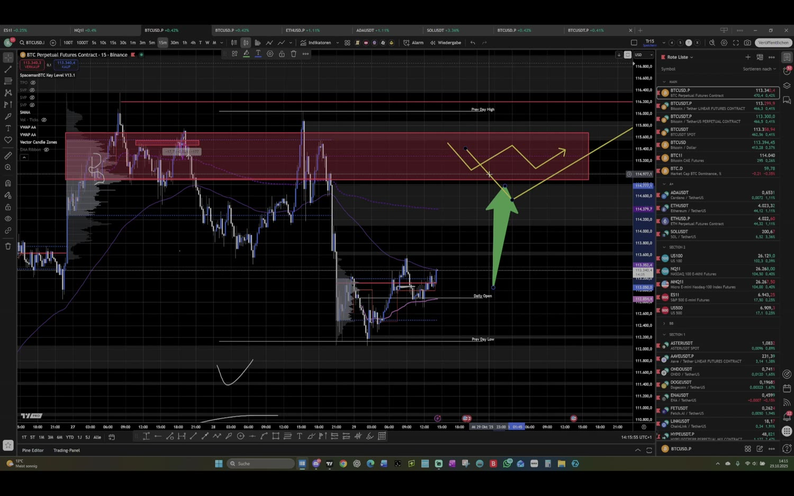
Video: 2025-10-29_14-11-11.mp4, Zeitpunkt ca. 4:44
Der Entscheidungsbaum vor jedem Scalping-Trade
Jeder Trade beginnt mit einem Entscheidungsbaum. Wenn ein Punkt nicht beantwortet werden kann, ist der Trade nicht reif.
| Schritt | Frage | Handlung |
|---|---|---|
| 1. Marktphase | Trend, Range oder Konsolidierung? | Nur Setups handeln, die zur Phase passen. |
| 2. Kontext | Was machen BTC, Nasdaq/S&P oder der Hauptmarkt? | Gegen den dominanten Risikomarkt nur mit kleiner Größe. |
| 3. Preiszone | Sind wir an EMA, POC, Value Area, LVN, Range High/Low? | Keine Trades in der Mitte ohne Vorteil. |
| 4. Reaktion | Kommt Long- oder Short-Confirmation? | Entry erst nach sichtbarer Bestätigung. |
| 5. Risiko | Kann der Stop logisch und finanziell getragen werden? | Sonst kein Trade oder Teilposition. |
| 6. Management | Wo ist TP, wo ist Exit bei Gegenreaktion? | Vor Entry entscheiden, nicht während Stress. |
15M, 3M und 1M richtig zusammensetzen
Die Videos arbeiten wiederholt mit einem großen Blick und einem schnellen Ausführungschart. Der 15-Minuten-Chart gibt Struktur und Bias. Der 3-Minuten-Chart zeigt, ob ein Pullback oder Durchbruch sauber ist. Der 1-Minuten-Chart dient nur für den präzisen Trigger und darf dich nicht vom übergeordneten Bild wegziehen.
| Timeframe | Aufgabe | Was du suchst |
|---|---|---|
| 15 Minuten | Marktregime | Trend, Range, Konsolidierung, wichtige Hochs/Tiefs |
| 3 Minuten | Setup-Zone | EMA-Test, Retest, Rejection, Range-Break |
| 1 Minute | Trigger | Impuls, Wick, kleiner Strukturbruch, schnelle Invalidierung |
Die 50er, 100er und 200er als Scalping-Gerüst
Ein wiederkehrendes Grundsystem in den Videos ist das Arbeiten mit EMAs. Besonders wichtig ist die 50er-Zone: Sie wird als laufender Entscheidungsbereich genutzt. Der Kurs kann dort Support finden, ablehnen, durchbrechen oder nach einem Bruch retesten.
Das EMA-System ist keine Magie. Es ist ein Orientierungsraster: Wo ist der kurzfristige Trend? Wo könnte der nächste Rücklauf stoppen? Wo ist der Trade zu spät? Wann muss ein Gewinner geschützt werden?
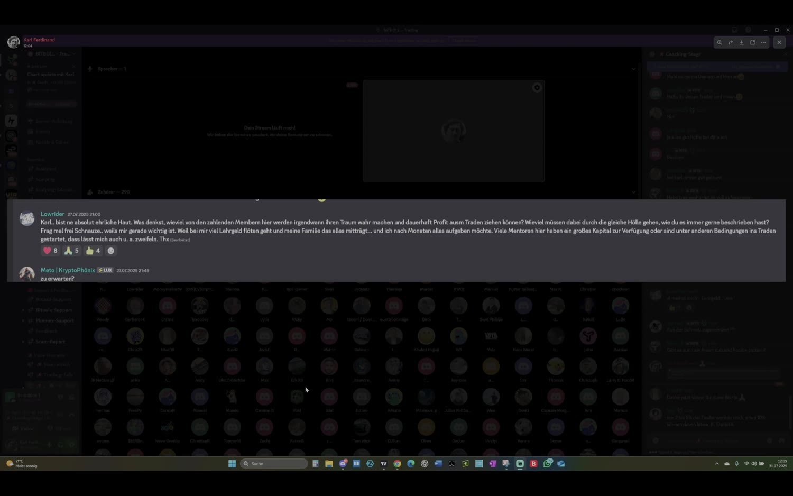
Video: 2025-07-31_12-05-08.mp4, Zeitpunkt ca. 4:44
| Situation | Long-Idee | Short-Idee | Kein Trade |
|---|---|---|---|
| Kurs über 50 EMA | Pullback hält über/auf EMA und Käufer reagieren | Nur wenn klare Schwäche und Bruch kommt | Wenn Kurs schon weit weggelaufen ist |
| Kurs bricht 50 EMA von unten | Long nach Retest und erneuter Stärke | Nicht direkt gegen Impuls shorten | Wenn Candle zu groß für sauberen Stop ist |
| Kurs unter 50 EMA | Nur Reclaim mit Bestätigung | Pullback an EMA wird abgelehnt | Wenn Range um EMA choppy ist |
| Alle EMAs über dem Kurs | Long nur nach starkem Reclaim | Short bevorzugt bei Ablehnung | Wenn Support direkt darunter liegt |
Der konkrete EMA-Scalp
Der EMA-Scalp ist das Einsteiger-Setup aus dem Material. Er funktioniert am besten in klaren Bewegungen, nicht im zähen Seitwärtsmarkt. Du wartest, bis der Markt die EMA-Zone testet und dort eine Reaktion zeigt.
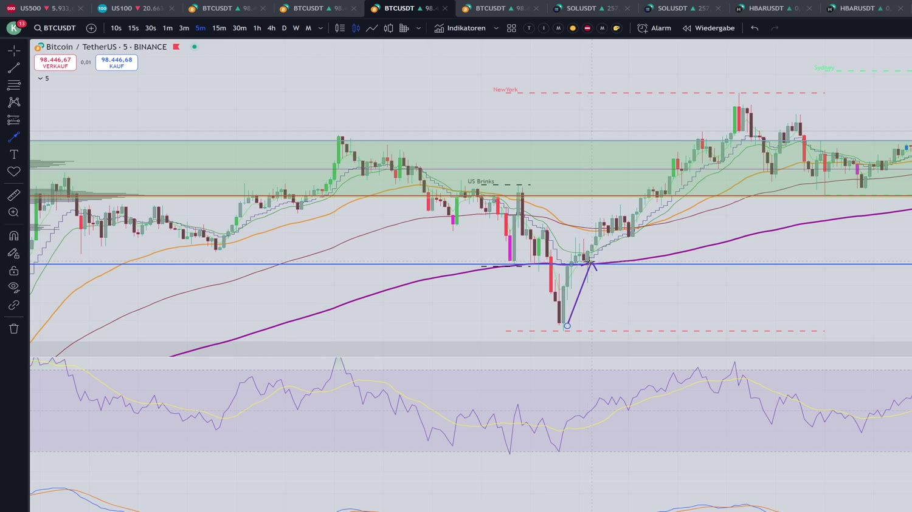
Video: 2024-11-22_11-35-101.mp4, Zeitpunkt ca. 22:44
- 15M zeigt Trend oder klare Richtung.
- 3M läuft an die 50er EMA oder bricht sie.
- 1M zeigt Reaktion: Wick, Reclaim, kleine Impulskerze oder Retest.
- Entry erst nach Bestätigung, nicht mitten in die fallende/steigende Kerze.
- Stop hinter die Reaktionszone, nicht willkürlich knapp.
- TP früh sichern, wenn der Move bereits fortgeschritten ist.
- Nach einem Scalp 3 bis 5 Minuten Pause, um Re-Entry-FOMO zu verhindern.
Warum der Retest wichtiger ist als der erste Break
Viele Anfänger kaufen den ersten Break oder shorten den ersten Drop. Das Material zeigt eine vorsichtigere Logik: Erst der Retest beweist, ob das Level akzeptiert wird. Der Break erzeugt Aufmerksamkeit. Der Retest entscheidet, ob daraus ein Trade wird.
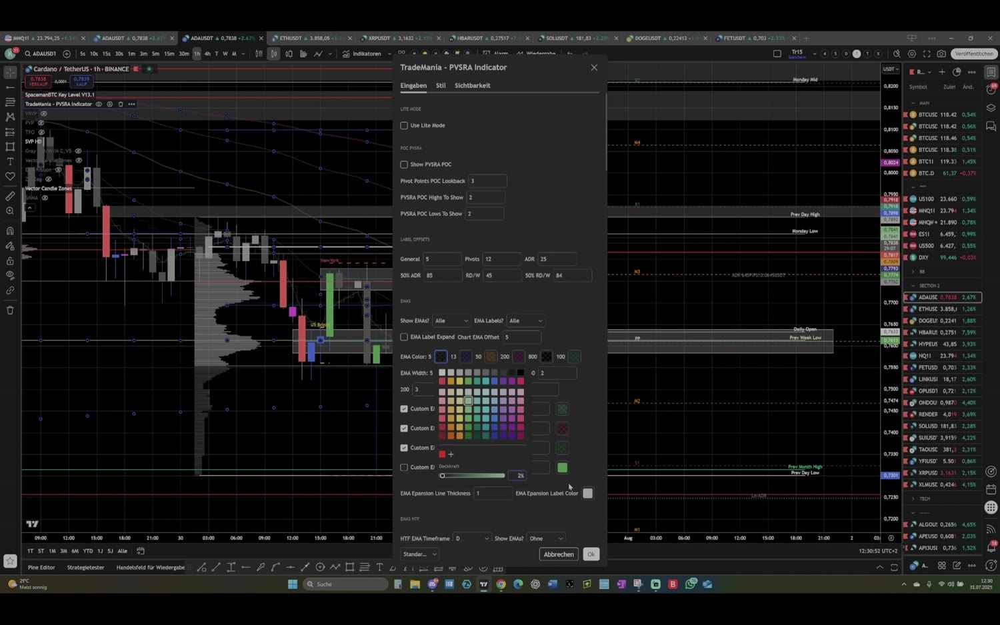
Video: 2025-07-31_12-05-08.mp4, Zeitpunkt ca. 25:44
| Ablauf | Long-Retest | Short-Retest |
|---|---|---|
| Break | Kurs bricht über EMA/Range/POC | Kurs bricht unter EMA/Range/POC |
| Rücklauf | Preis fällt zurück zum alten Widerstand | Preis steigt zurück zum alten Support |
| Bestätigung | Zone hält, Käufer reagieren | Zone hält von unten, Verkäufer reagieren |
| Entry | nach kleiner Struktur nach oben | nach kleiner Struktur nach unten |
| Invalidierung | Rückfall unter Retest-Tief | Rückkehr über Retest-Hoch |
Range, Konsolidierung und die Frage: oben, unten oder Mitte?
Die Videos betonen immer wieder, dass man wissen muss, ob der Markt trendet oder nur eine Range ausbildet. In einer Range sind die besten Scalps an den Rändern, nicht in der Mitte. Die Mitte ist Entscheidungsnebel.
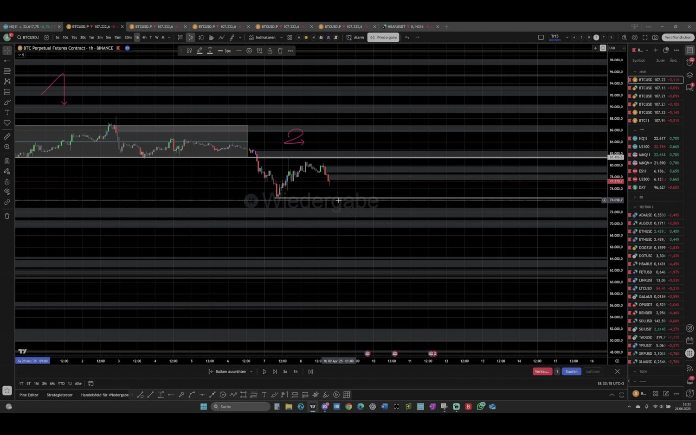
Video: 2025-06-26_18-22-30.mp4, Zeitpunkt ca. 10:44
| Ort in der Range | Was du erwartest | Trade-Idee |
|---|---|---|
| Range Low | Käufer verteidigen oder Bruch beschleunigt | Long-Reclaim oder Short-Break-Retest |
| Range High | Verkäufer verteidigen oder Breakout | Short-Rejection oder Long-Break-Retest |
| Range Mitte | Richtungswechsel, Chop, Fehlsignale | Meist kein Trade |
| Nach Range Break | Fortsetzung oder Fakeout | Retest abwarten |
Point of Control, Value Area und Low Volume Nodes
Ein großer Teil des Materials dreht sich um Volumenprofile. Der Point of Control ist der Preisbereich mit dem meisten gehandelten Volumen in einer definierten Range. Value Area High/Low zeigen die obere und untere Grenze des fairen Bereichs. Low Volume Nodes sind dünn gehandelte Zonen, in denen der Markt oft schnell durchläuft oder scharf reagiert.
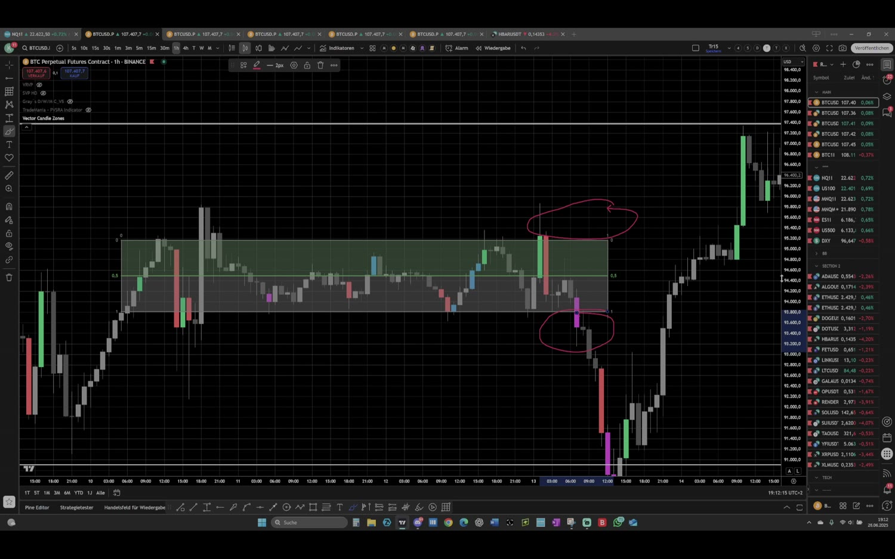
Video: 2025-06-26_18-52-30.mp4, Zeitpunkt ca. 19:44
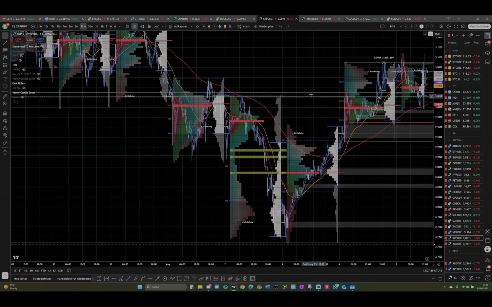
Video: 2025-08-05_12-50-51.mp4, Zeitpunkt ca. 16:44
| Begriff | Bedeutung | Scalping-Nutzung |
|---|---|---|
| POC | Preis mit viel Volumen | Entscheidungszone: halten, reclaimen oder verlieren |
| VAH | Oberer Value-Area-Rand | Widerstand, Breakout-Zone oder Retest-Level |
| VAL | Unterer Value-Area-Rand | Support, Breakdown-Zone oder Reclaim-Level |
| LVN | Dünner Volumenbereich | Schnelle Bewegung möglich, nicht blind dagegenstellen |
| Range Profile | Volumen nur für ausgewählte Struktur | Genauer als globales Profil für Scalps |
Warum dünne Zonen gefährlich und wertvoll sind
Low Volume Nodes sind im Material wichtig, weil sie zeigen, wo wenig Marktakzeptanz stattgefunden hat. Wenn der Preis in solche Zonen fällt oder steigt, kann die Bewegung schnell werden. Gleichzeitig kann eine Reaktion an der Kante stark sein.
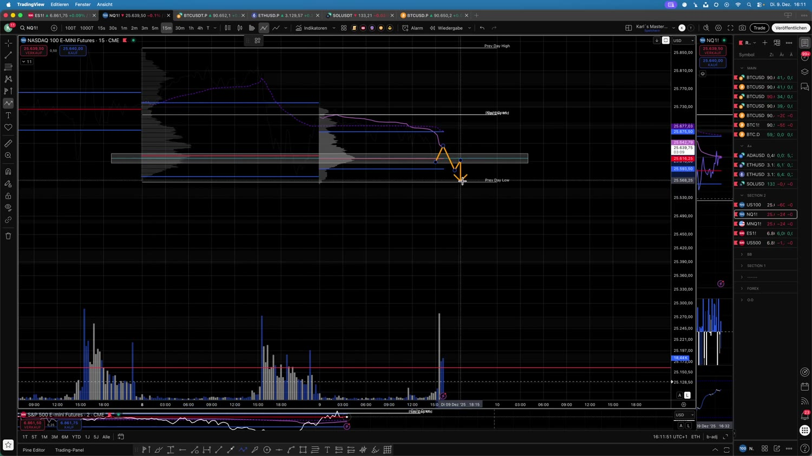
Video: 2025-12-09_16-10-07.mp4, Zeitpunkt ca. 1:44
- LVN ist kein Entry allein.
- An der LVN-Kante auf Reaktion warten.
- Wenn der Preis in die LVN hinein akzeptiert wird, kann er schnell zur nächsten Volumenzone laufen.
- Stop nicht mitten in die LVN legen, wenn dort schnelle Durchläufe typisch sind.
- LVN immer mit Struktur, EMA oder Range kombinieren.
Ungleichgewicht, Gap Close und Balance-Wiederherstellung
In vielen Videos wird sinngemäß gefragt: Hat der Markt eine Bewegung sauber ausbalanciert oder gibt es eine offene Imbalance? Eine schnelle einseitige Bewegung hinterlässt oft Bereiche, in denen wenig Gegenhandel stattgefunden hat. Der Markt kann diese Bereiche später teilweise schließen oder durch Konsolidierung ausgleichen.
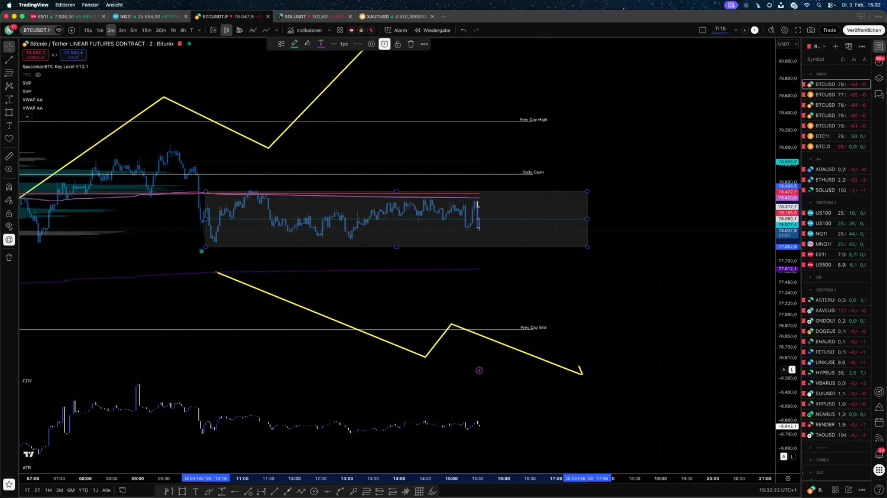
Video: 2026-02-03_15-05-14-00.25.27.405-00.55.45.100-seg2.mp4, Zeitpunkt ca. 1:44
| Imbalance-Situation | Interpretation | Trade-Plan |
|---|---|---|
| Starker Push ohne Gegenhandel | Markt ist einseitig gelaufen | Nicht spät hinterherspringen |
| Konsolidierung nach Push | Balance wird aufgebaut | Ausbruch oder Rejection abwarten |
| Gap Close / Rücklauf | Markt holt offene Zone ab | TP-Ziel oder Reversal-Zone |
| Imbalance bleibt offen | Trend bleibt stark | Nur Pullback-Continuation suchen |
Long- und Short-Confirmation als Pflichtfilter
Das Wort Confirmation taucht im Material ständig auf. Gemeint ist: Nicht die Meinung wird gehandelt, sondern die Bestätigung. Long wird erst interessant, wenn der Markt an einer vorbereiteten Zone Stärke zeigt. Short wird erst interessant, wenn der Markt an einer vorbereiteten Zone Schwäche zeigt.
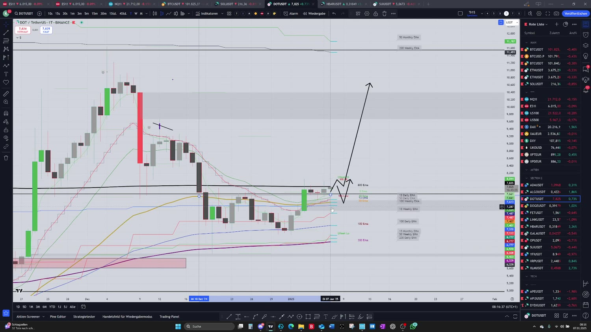
Video: 2025-01-07_08-14-53.mp4, Zeitpunkt ca. 1:44
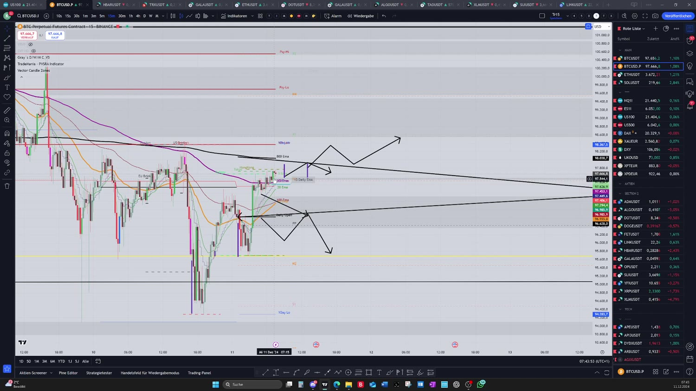
Video: 2024-12-11_07-33-08.mp4, Zeitpunkt ca. 10:44
| Confirmation | Long | Short |
|---|---|---|
| Level-Reaktion | Support hält, Käufer reagieren | Resistance hält, Verkäufer reagieren |
| EMA | Reclaim oder Bounce | Ablehnung oder Bruch |
| POC/Value | POC wird zurückerobert | POC wird verloren |
| Kerzenstruktur | höheres Tief, Impulskerze | tieferes Hoch, Abverkauf |
| Invalidierung | Level wird klar verloren | Level wird klar zurückerobert |
Footprint, Absorption und Bookmap ohne Überforderung
Die fortgeschritteneren Videos gehen deutlich in Richtung Orderflow. Footprint und Bookmap sollen nicht dekorativ sein. Sie werden genutzt, um zu sehen, ob an einer Zone wirklich gekauft, verkauft oder absorbiert wird.
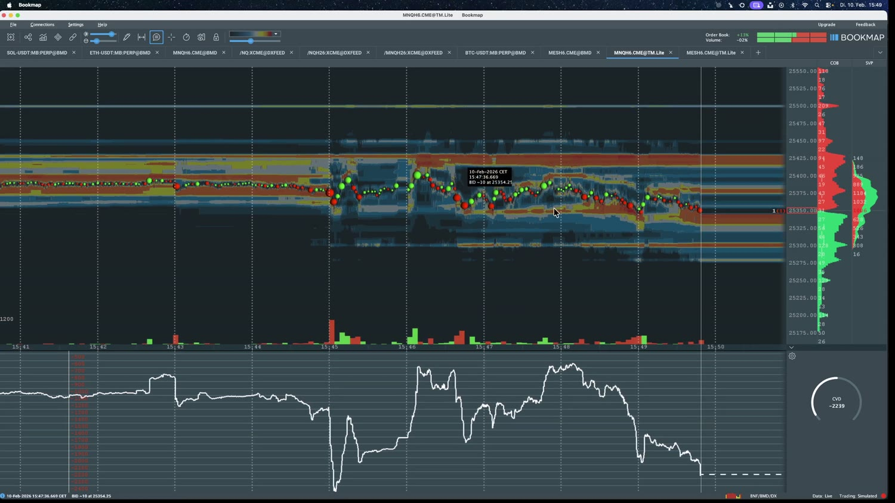
Video: 2026-02-10_15-30-04.mp4, Zeitpunkt ca. 19:44
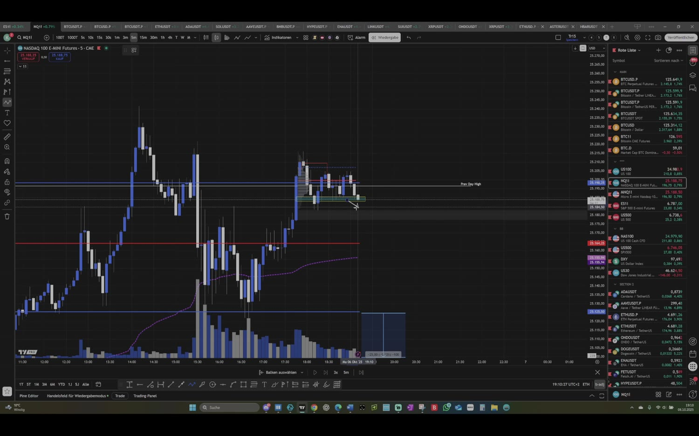
Video: 2025-10-06_19-05-43.mp4, Zeitpunkt ca. 4:44
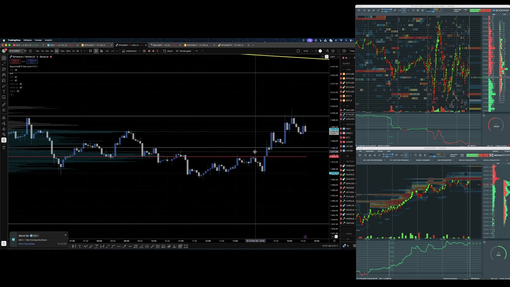
Video: 2026-02-17_15-09-11-00.23.16.502-00.46.23.000-seg2.mp4, Zeitpunkt ca. 4:44
| Signal | Bedeutung | Handlung |
|---|---|---|
| Absorption | Eine Seite nimmt aggressive Orders auf | Nicht blind dagegenhalten, Bestätigung abwarten |
| Bid/Ask Druck | Kurzfristiges Ungleichgewicht | Nur an Leveln sinnvoll |
| Bookmap-Liquidität | Sichtbare Orders/Zonen | Als Ziel oder Reaktionsbereich nutzen |
| POC-Verschiebung | Akzeptanz wandert | Bias anpassen |
Warum BTC nicht isoliert gehandelt wird
In mehreren Videos wird Bitcoin im Kontext von Nasdaq, S&P und allgemeinem Risikoappetit betrachtet. Ein scheinbar guter BTC-Scalp kann scheitern, wenn der breitere Markt im selben Moment gegen dich läuft. Das ist besonders wichtig bei Scalps, weil der Zeithorizont kurz und der Spielraum klein ist.
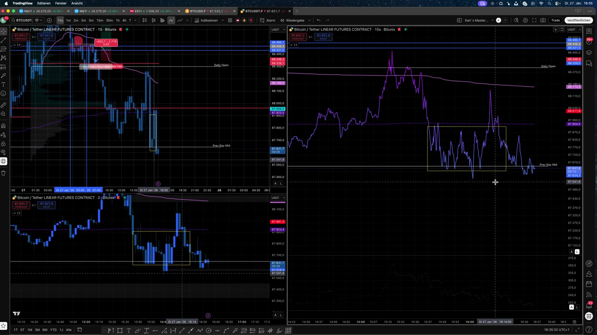
Video: 2026-01-27_16-00-48.mp4, Zeitpunkt ca. 34:44
| Kontext | Bedeutung | Scalping-Folge |
|---|---|---|
| Nasdaq bricht aus | Risk-On kann BTC/Alts stützen | Shorts strenger filtern |
| Nasdaq verliert Level | Risk-Off kann BTC belasten | Longs kleiner oder auslassen |
| BTC stark, Alts schwach | Selektiver Markt | Nur Top-Assets handeln |
| Alle Assets choppy | Kein klarer Flow | Weniger Trades, kleinere Size |
Warum weniger Coins besser sind
Das Material legt nahe: Es reicht, wenige Lieblingsmärkte wirklich gut zu kennen. Zu viele Altcoins gleichzeitig erzeugen Stress, schlechte Ausführung und halbe Aufmerksamkeit. Für Scalping sind Liquidität, Spread, Volatilität und saubere Chartstruktur wichtiger als die Hoffnung auf den nächsten Hype.
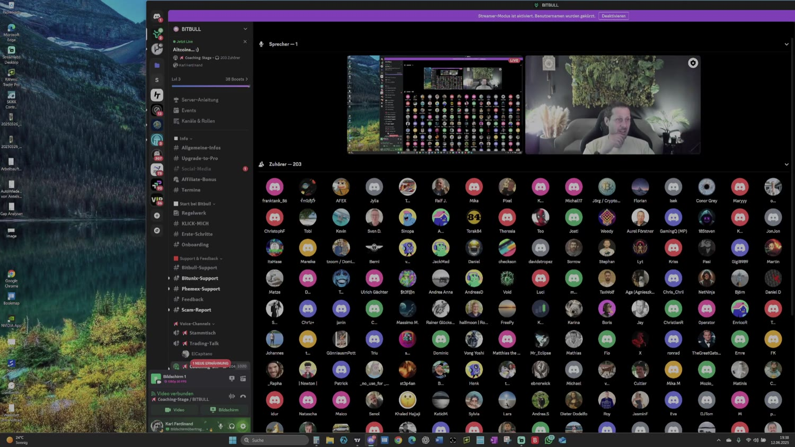
Video: altcoin_talk_med_qual.mp4, Zeitpunkt ca. 61:44
- Hauptmarkt zuerst: BTC als Orientierung.
- Nur liquide Altcoins, die du regelmäßig beobachtest.
- Keine zehn Charts gleichzeitig aktiv scalpen.
- Wenn der Hauptmarkt unklar ist, Altcoin-Scalps reduzieren.
- Nur handeln, wenn Level, Reaktion und Risiko klar sind.
Teilposition, Full Size und Stop-Logik
Ein starkes Motiv im Material ist, mit kleiner Größe zu arbeiten, wenn der Markt nicht perfekt ist. Eine Teilposition gibt dir Luft für einen größeren logischen Stop und schützt das Portfolio. Full Size ist nur für Situationen gedacht, in denen Markt, Level, Confirmation und Momentum gleichzeitig stimmen.
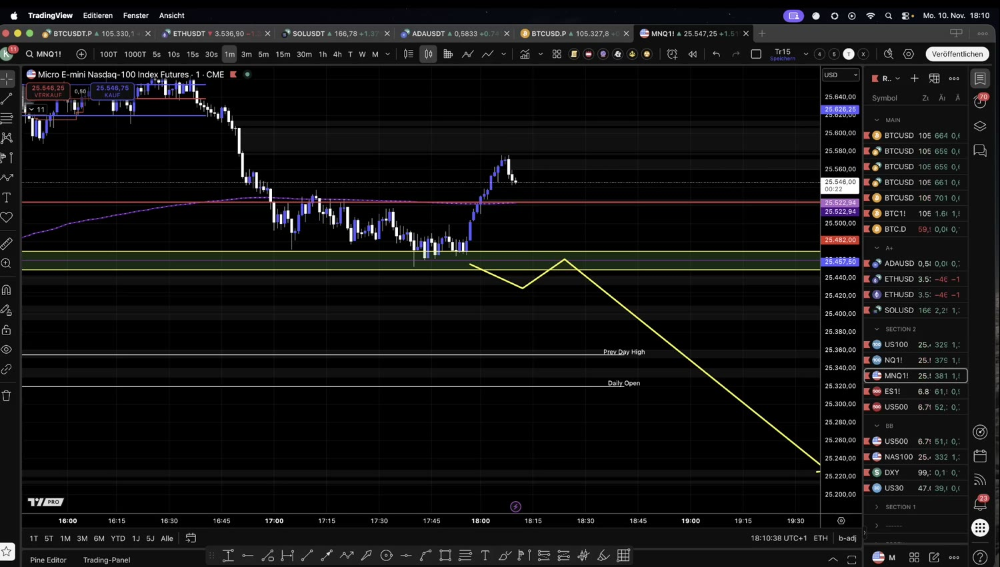
Video: 2025-11-10_17-50-54.mp4, Zeitpunkt ca. 19:44
| Marktzustand | Positionsgröße | Warum |
|---|---|---|
| Unklar, aber Idee vorhanden | Teilposition | Du kannst einen sinnvolleren Stop setzen |
| A-Setup mit Bestätigung | Normale Größe | Risiko ist berechenbar |
| A+ Momentum und klare Zone | Full Size möglich | Nur wenn vorher geplant |
| Nach Verlust oder Chop | 0 bis sehr klein | Overtrading verhindern |
Gewinne sichern, bevor Gebühren und Gegenbewegung sie fressen
Scalping ist kein Swingtrading. Mehrfach wird betont, dass man mit Gewinnen zufrieden sein muss. Ein kleiner Scalp mit sauberem Exit ist besser als ein Gewinn, der wieder in den Stop läuft. Besonders mit Hebel können kleine Kursbewegungen genügen; gleichzeitig können Gebühren und Slippage mehrere schlechte Re-Entries teuer machen.
Video: 2025-07-03_19-04-06.mp4, Zeitpunkt ca. 58:44
| Situation | Management |
|---|---|
| Move läuft schnell in dein Ziel | Teilgewinn oder Vollausstieg prüfen |
| Preis erreicht nächste EMA/POC/Range-Kante | Reaktion beobachten, nicht hoffen |
| Gegenimpuls entsteht | Stop nachziehen oder schließen |
| Du bist spät eingestiegen | TP schneller nehmen |
| Nach TP entsteht sofort neue Chance | 3-5 Minuten Pause statt impulsivem Re-Entry |
Wann der Zug abgefahren ist
Eine der wertvollsten Regeln aus dem Material: Wenn der Kurs bereits weit weg von der Entscheidungszone gelaufen ist, steigst du nicht mehr ein. Es kommen neue Chancen. Der Preis soll zu deinem Plan kommen, nicht du dem Preis hinterher.
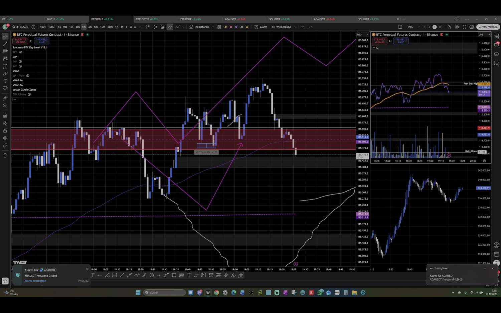
Video: 2025-10-27_18-03-41-00.42.27.313-01.25.26.700-seg2.mp4, Zeitpunkt ca. 40:44
- Kein Entry, wenn die Trigger-Kerze zu groß ist.
- Kein Entry, wenn der Preis weit von EMA/Level entfernt ist.
- Kein Entry nach drei grünen oder roten Impulskerzen ohne Pullback.
- Kein Entry, wenn du nur klickst, weil du den Move verpasst hast.
- Kein Entry direkt in eine erwartete Gegen-Zone hinein.
Wann du raus musst, auch wenn die Idee noch schön klingt
Der Exit ist im Scalping genauso wichtig wie der Entry. Wenn der Markt deine Zone nicht respektiert, wenn der Gegenimpuls stark wird oder wenn der breite Markt dreht, wird geschlossen. Nicht diskutiert.
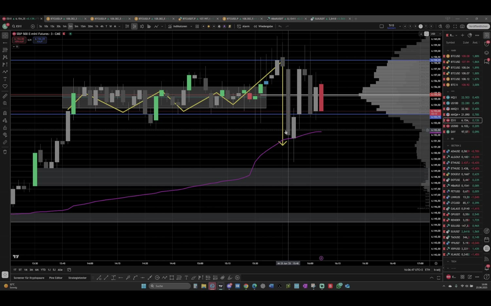
Video: 2025-06-25_16-02-16.mp4, Zeitpunkt ca. 4:30
| Exit-Grund | Aktion |
|---|---|
| Level wird klar verloren | Trade schließen oder Stop ausführen lassen |
| POC/EMA gegen dich reclaimt | Nicht hoffen, raus |
| Nasdaq/BTC-Kontext dreht gegen Position | Risiko reduzieren |
| Trade stagniert zu lange | Zeitstop prüfen |
| Tagesziel erreicht | Nicht weiter erzwingen |
Timing, Volatilität und die besten Lernfenster
Scalping lebt von Bewegung, aber nicht jede Bewegung ist handelbar. Rund um wichtige Opens, Daten oder starke Marktphasen entstehen Chancen. Gleichzeitig steigt dort die Gefahr von Spikes, Slippage und emotionalem Handeln.
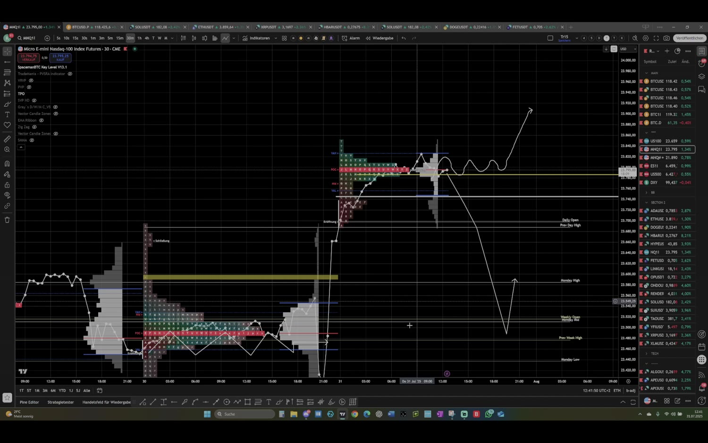
Video: 2025-07-31_12-37-05.mp4, Zeitpunkt ca. 4:44
- Vor dem aktiven Fenster Level vorbereiten.
- Erste Impulse beobachten, nicht sofort hinterher.
- Wenn Volatilität fehlt, keine Gewinne erzwingen.
- Wenn Volatilität extrem ist, Position kleiner.
- Nach dem Trade sofort Review: War es Setup oder Zufall?
So wird ein Scalp Schritt für Schritt geführt
Das folgende Protokoll ist die praktische Zusammenfassung des Videomaterials. Es ist als Ablauf gedacht, den du vor jedem Trade abhaken kannst.

Video: 2025-07-03_20-06-29.mp4, Zeitpunkt ca. 7:44
| Phase | Frage | Wenn Antwort unklar ist |
|---|---|---|
| Vorbereitung | Welche Zone will ich handeln? | Kein Trade |
| Bias | Long, Short oder neutral? | Kein Trade |
| Confirmation | Welche Reaktion brauche ich? | Warten |
| Entry | Wo genau löse ich aus? | Kein Market-Klick |
| Stop | Wo ist die Idee falsch? | Positionsgröße reduzieren |
| TP | Wo nehme ich Profit? | Trade nicht eröffnen |
| Exit | Was beendet den Trade sofort? | Regel formulieren |
| Review | War das ein A-Trade? | Im Journal markieren |
Die vier Kernsetups aus dem Material
| Setup | Long | Short | Beste Bedingung |
|---|---|---|---|
| EMA Bounce | Pullback an 50 EMA hält | Retest an EMA wird abgelehnt | klarer Trend |
| Range Edge | Range Low wird zurückerobert | Range High wird abgelehnt | Seitwärtsmarkt |
| POC Reclaim/Loss | POC wird zurückerobert | POC wird verloren | Volumen-Entscheidung |
| LVN Run | Akzeptanz über dünner Zone | Akzeptanz unter dünner Zone | schneller Momentum-Scalp |
Alle vier Setups haben denselben Aufbau: vorbereitete Zone, Bestätigung, kleiner Stop, schnelles Management. Sie unterscheiden sich nur darin, welche Zone die Entscheidung liefert.
Wann ein Trade groß genug ist
Der Score macht aus Bauchgefühl eine Checkliste. Er zwingt dich, vor dem Entry zu beweisen, warum der Trade gut ist.
| Kriterium | Punkte |
|---|---|
| 15M-Kontext klar | +2 |
| 3M-Level vorbereitet | +2 |
| 1M-Trigger sauber | +2 |
| POC/EMA/Value/Range bestätigt | +2 |
| BTC/Nasdaq-Kontext passt | +1 |
| Stop logisch und klein genug | +1 |
| TP vor nächster Gegen-Zone | +1 |
| Emotion neutral | +1 |
| Score | Entscheidung |
|---|---|
| 0-5 | Kein Trade |
| 6-7 | Nur Demo oder sehr klein |
| 8-9 | Normaler Trade |
| 10-12 | A-Trade, normale bis erhöhte Größe nur bei stabiler Statistik |
30 Tage vom Zuschauen zur Ausführung
| Tage | Aufgabe | Ziel |
|---|---|---|
| 1-5 | Nur 15M/3M Struktur markieren | Trend, Range, POC, EMA sehen |
| 6-10 | EMA-Scalps historisch nachzeichnen | Entry/Stop/TP trainieren |
| 11-15 | POC und Value Area in Videos/Charts markieren | Volumenzonen verstehen |
| 16-20 | Nur einen Setup-Typ im Demo handeln | Regelbruchquote messen |
| 21-25 | Live mit Kleinstgröße oder weiter Demo | Execution und Emotion testen |
| 26-30 | Review, Statistik, Fehlerkatalog | Nur bestes Setup behalten |
Die Vorlage für jeden Scalping-Trade
| Feld | Eintrag |
|---|---|
| Datum / Uhrzeit | Session, Marktphase |
| Asset | BTC, Altcoin, Index-Kontext |
| Setup | EMA, Range, POC, LVN |
| Bias | Long, Short, Neutral |
| Entry-Grund | Level + Confirmation |
| Stop-Grund | Invalidierungszone |
| TP-Grund | EMA, POC, Range-Kante, LVN-Ziel |
| Positionsgröße | Teilposition, normal, Full Size |
| Ergebnis | R, Prozent, Gebühren |
| Fehler | Zu spät, kein Kontext, TP verpasst, Overtrade |
| Screenshot | Vor Entry und nach Exit |
Das Journal trennt Glück von Können. Ein Gewinn ohne Regel ist kein Beweis. Ein Verlust mit perfekter Regel ist Datenmaterial.
Die 25 Regeln, die das ganze Buch zusammenhalten
- Kein Trade ohne vorbereitete Zone.
- Kein Trade ohne Confirmation.
- Kein Trade in der Range-Mitte.
- Kein Entry nach gelaufenem Move.
- Der 15M-Kontext schlägt den 1M-Impuls.
- Die 50er EMA ist Entscheidungszone, nicht Garantie.
- POC ist Entscheidung, nicht automatischer Entry.
- LVN bedeutet Vorsicht: schnelle Bewegung möglich.
- Imbalance kann geschlossen oder durch Konsolidierung ausgeglichen werden.
- BTC/Nasdaq-Kontext wird vor Altcoin-Scalps geprüft.
- Teilposition bei unklarem Markt.
- Full Size nur bei A-Setup.
- Stop hinter die Invalidierung, nicht an die Hoffnung.
- TP früher nehmen, wenn du spät eingestiegen bist.
- Nach TP nicht sofort emotional reinklicken.
- Gebühren und Slippage sind echte Gegner.
- Wenn Volatilität fehlt, wird nicht gezwungen.
- Wenn Volatilität chaotisch ist, wird kleiner gehandelt.
- Nach zwei Regelbrüchen ist der Tag beendet.
- Lieber kein Trade als ein B-Trade mit großer Größe.
- Der Markt muss deine Zone bestätigen.
- Du handelst Reaktionen, nicht Vorhersagen.
- Wenige Märkte sauber schlagen viele Märkte halb.
- Jeder Trade bekommt einen Screenshot.
- Profitabilität entsteht aus Wiederholung, nicht aus einem perfekten Video.
Wie gut Scalping wirklich funktionieren kann
Scalping kann funktionieren, aber nicht, weil ein Indikator magisch ist. Es funktioniert nur, wenn mehrere Bedingungen gleichzeitig erfüllt sind: ein liquider Markt, geringe Gebühren, schnelle Ausführung, ein wiederholbarer Vorteil, harte Stopps, saubere Statistik und die Fähigkeit, kleine Gewinne nicht wieder abzugeben.
Die Videos zeigen genau diesen Punkt: Der Trader wartet auf konkrete Zonen und Reaktionen. Er handelt weniger, aber an besseren Stellen. Das ist der Unterschied zwischen professionellem Scalping und impulsivem 1-Minuten-Klicken.
| Was funktionieren kann | Was meistens nicht funktioniert |
|---|---|
| Warten auf vorbereitete Zonen | Jeden 1M-Impuls handeln |
| Kleine, saubere Stops | Stop verschieben, weil man recht haben will |
| Teilposition bei unklarem Markt | Full Size in jede Idee |
| TP an EMA/POC/Range-Kante | Immer auf den großen Move hoffen |
| 50-100 dokumentierte Wiederholungen | Nach drei Gewinnen Größe erhöhen |
| Orderflow nur als Bestätigung | Footprint ohne Kontext lesen |
Was einen perfekten Scalp ausmacht
Perfektion im Scalping bedeutet nicht, jedes Top und Bottom zu treffen. Perfektion bedeutet, dass der Trade vor dem Entry so klar ist, dass du danach nur noch deinen Plan ausführst. Ein perfekter Scalp hat fünf Bausteine: Kontext, Zone, Trigger, Risiko und Exit.
| Baustein | Perfekt | Nicht perfekt |
|---|---|---|
| Kontext | 15M/3M zeigen dieselbe Story | 1M sieht gut aus, aber 15M widerspricht |
| Zone | EMA, POC, VAH/VAL, Range-Kante oder LVN | Irgendwo in der Mitte |
| Trigger | Reclaim, Ablehnung, Wick, Retest, Absorption | Ich glaube, es steigt jetzt |
| Risiko | Stop hinter Invalidierung, Größe passt | Stop zu eng, damit Size größer ist |
| Exit | TP und Notausstieg stehen vorher fest | Ich entscheide dann live |
- Der Entry liegt an einer markierten Zone.
- Die Confirmation ist sichtbar, nicht nur gefühlt.
- Der Stop ist logisch und finanziell klein genug.
- Der TP liegt vor der nächsten Gegen-Zone.
- Du weißt vor dem Entry, wann du sofort raus musst.
- Der Trade ist nach dem Exit screenshot- und journalfähig.
Wie aus Scalps ein positiver Erwartungswert wird
Profitabilität entsteht mathematisch aus Erwartungswert. Nicht aus Trefferquote allein. Ein Scalper kann mit hoher Trefferquote verlieren, wenn die wenigen Verlierer zu groß sind. Er kann mit mittlerer Trefferquote gewinnen, wenn Gewinner sauber gemanagt und Verlierer klein gehalten werden.
| Kennzahl | Bedeutung | Mindestziel vor Skalierung |
|---|---|---|
| Winrate | Wie viele Trades gewinnen? | Nicht isoliert bewerten |
| Average Win | Durchschnittlicher Gewinn | größer als Gebühren + Slippage |
| Average Loss | Durchschnittlicher Verlust | klar begrenzt |
| Profit Factor | Bruttogewinn / Bruttoverlust | über 1,2 im Forward-Test |
| Expectancy | Durchschnittlicher Gewinn pro Trade | positiv nach Kosten |
| Rule Break Rate | Regelbruchquote | unter 5% |
| Max Drawdown | größte Verluststrecke | psychisch tragbar |
Formel: Erwartungswert = Winrate x Durchschnittsgewinn - Verlustquote x Durchschnittsverlust - Kosten. Wenn dieser Wert über mindestens 100 Trades nicht positiv ist, wird nicht skaliert.
Profi-Prinzipien statt Guru-Kopie
Dieses Buch kopiert keinen externen Trader. Es ordnet aber die Kurslogik in bekannte professionelle Denkweisen ein: Price Action, Orderflow, Auction Market Theory, Volume Profile und konsequentes Trade-Management.
| Trader/Schule | Bekannt für | Übertrag ins Buch |
|---|---|---|
| Al Brooks / Price Action | kleine Timeframes, Kerzenlogik, Traps, Scalps | Entry erst nach Struktur und Signal, nicht nach Wunsch |
| Linda Raschke | kurzfristige Setups, Disziplin, Muster und Timing | Setups werden trainiert, nicht improvisiert |
| Orderflow-Trader / Jigsaw-Schule | DOM, Tape, Orderflow, Ausführung | Orderflow als Bestätigung, nicht als alleinige Idee |
| Bookmap-/Heatmap-Trader | Liquidität, Absorption, Heatmap, Orderbuch | Liquiditätszonen erklären Reaktion und Ziele |
| Auction-Market-/Volume-Profile-Trader | Value, POC, Balance/Imbalance | Der Markt rotiert um Value oder verlässt Value mit Akzeptanz |
Was externe Quellen bestätigen und was nicht
Die externe Recherche bestätigt nicht, dass irgendein Setup garantiert profitabel ist. Sie bestätigt aber mehrere Bausteine, die im Kursmaterial immer wieder auftauchen: Orderflow zeigt Informationen, die Kerzencharts nicht vollständig zeigen; Volume Profile strukturiert den Markt über gehandelte Volumenbereiche; Hebel und Daytrading sind für Retail-Trader riskant; professionelle Ausführung braucht Training und Daten.
| Kursprinzip | Externe Bestätigung | Praktische Konsequenz |
|---|---|---|
| POC/Value als Entscheidungszone | Volume-Profile-Quellen definieren POC als volumenstärkstes Preislevel einer Periode | POC ist Zone für Reaktion, nicht automatischer Entry |
| Bookmap/Orderbuch | Bookmap visualisiert ruhende Liquidität und historische Liquiditätsänderungen | Liquidität als Ziel, Magnet oder Fakeout-Zone behandeln |
| Orderflow/Footprint | Orderflow-Plattformen nutzen Bid/Ask, DOM, Tape, Heatmap | Nur als Bestätigung an vorbereiteten Zonen |
| Daytrading-Risiko | SEC/CFTC warnen vor hohen Verlusten und Kosten | Kleinstgröße, Journal, Gebührenrechnung Pflicht |
| Professionelles Training | Orderflow-Anbieter betonen Übungen und Analytics | Nicht nur schauen, sondern replayen, markieren, auswerten |
Vier Setups als ausführbare Playbooks
Die erste Version des Buches hat die Setups genannt. Hier sind sie als konkrete Playbooks formuliert. Nutze zuerst nur ein Setup, bis du 50 saubere Beispiele gesammelt hast.
1. EMA Bounce Long
| Element | Regel |
|---|---|
| Kontext | 15M nicht bearish, 3M über oder an der 50er EMA |
| Zone | 50 EMA oder Cluster aus 50/100/200 |
| Trigger | Wick unter EMA, Reclaim, grüne Impulskerze oder höheres Tief |
| Entry | nach Trigger-Schluss oder kleinem Retest |
| Stop | unter Wick/Retest-Tief |
| TP | nächstes lokales Hoch, POC oder Range High |
| Verbot | wenn der Preis schon weit von der EMA entfernt ist |
2. EMA Rejection Short
| Element | Regel |
|---|---|
| Kontext | 15M neutral bis bearish, Kurs unter 50 EMA |
| Zone | Rücklauf von unten an 50/100 EMA |
| Trigger | Ablehnung, roter Impuls, tieferes Hoch |
| Entry | nach Rejection oder Break des kleinen 1M-Lows |
| Stop | über Rejection-Hoch |
| TP | Range Low, VAL oder nächste LVN-Kante |
| Verbot | wenn direkt darunter starker Support/POC liegt |
3. POC Reclaim Long
| Element | Regel |
|---|---|
| Kontext | POC wurde verloren, aber Preis kommt zurück |
| Zone | POC plus Range-/EMA-Konfluenz |
| Trigger | Schluss zurück über POC, Retest hält |
| Entry | Retest-Hold oder Micro-Strukturbruch |
| Stop | unter Retest oder unter POC-Fehlschlag |
| TP | VAH, Range High oder offene Imbalance |
| Verbot | wenn Reclaim nur ein Docht ohne Akzeptanz ist |
4. LVN Momentum Run
| Element | Regel |
|---|---|
| Kontext | Preis akzeptiert über/unter einer dünnen Volumenzone |
| Zone | LVN-Kante |
| Trigger | Akzeptanz in Richtung der dünnen Zone |
| Entry | nach Break und kleinem Retest |
| Stop | zurück hinter LVN-Kante |
| TP | nächste High-Volume-Zone oder Value-Kante |
| Verbot | wenn direkt vor Entry schon der ganze LVN-Lauf passiert ist |
Warum ein Setup trotz richtiger Idee scheitert
Viele Trades scheitern nicht, weil die Analyse komplett falsch war, sondern weil ein Detail schlecht umgesetzt wurde. Dieses Kapitel ist für die Nacharbeit nach jedem Verlust.
| Fehler | Symptom | Korrektur |
|---|---|---|
| Zu später Entry | Preis weit weg von EMA/Level | Nur Retest oder neuen Aufbau handeln |
| Zu enger Stop | Richtige Idee, aber Stop wird abgeholt | Stop hinter Invalidierung, Size reduzieren |
| Falsches Marktregime | Trendsetup in Range oder Range-Setup im Trend | Vor jedem Trade Regime markieren |
| POC falsch genutzt | POC als Entry statt Zone gehandelt | Reaktion/Reclaim abwarten |
| Orderflow überbewertet | Footprint-Signal ohne Chart-Kontext | Orderflow nur letzter Filter |
| TP verpasst | Gewinn dreht in Verlust | TP an nächster Gegen-Zone vorab festlegen |
| Korrelation ignoriert | Nasdaq/BTC dreht gegen Position | Kontext vor Entry prüfen |
| Overtrading nach Gewinn | Profit wird zurückgegeben | Nach TP Pause und Tageslimit |
Vom Buch zum eigenen System
Dieses Buch kann dir Regeln geben, aber es kann dir nicht die 300 Wiederholungen abnehmen, die aus Regeln Können machen. Der nächste Schritt ist deshalb ein persönliches Scalping-Labor.
| Aufgabe | Umsetzung | Ergebnis |
|---|---|---|
| Video-Replay | Pro Tag 1 Video, nur Setups markieren | Auge für Zonen |
| Screenshot-Datenbank | Vorher/Nachher-Bilder speichern | Mustererkennung |
| Setup-Statistik | Je Setup 50 Beispiele | Erwartungswert je Setup |
| Gebührenrechnung | Spread, Fee, Slippage pro Trade erfassen | Realistische Profitabilität |
| Market-Replay | 1M/3M ohne Zukunftsdaten üben | Echte Entscheidung trainieren |
| Live-Kleinstgröße | erst nach positivem Forward-Test | Execution testen |
| Monatsreview | Top 10 Gewinner/Verlierer analysieren | Regeln verbessern |
- Ein Setup auswählen.
- 50 historische Beispiele sammeln.
- 20 Replay-Trades ohne Echtgeld machen.
- 20 Kleinstgrößen-Trades dokumentieren.
- Nur skalieren, wenn Regelbruchquote unter 5% bleibt.
- Jeden Monat schlechte Regeln streichen und gute Regeln präzisieren.
Die letzte Seite vor dem echten Trade
Diese Checkliste ist bewusst streng. Ein Trade, der sie nicht besteht, darf nicht mit normaler Größe gehandelt werden.
| Check | Ja/Nein |
|---|---|
| Ich kenne die Marktphase: Trend, Range, Chop oder News. | |
| Ich weiß, ob BTC/Nasdaq-Kontext hilft oder stört. | |
| Ich handele an EMA, POC, VAH/VAL, LVN oder Range-Kante. | |
| Ich habe eine echte Confirmation, nicht nur eine Vermutung. | |
| Mein Stop liegt hinter der Invalidierung. | |
| Meine Positionsgröße passt zum Stop. | |
| Mein TP liegt vor der nächsten Gegen-Zone. | |
| Ich weiß, wann ich sofort aussteige. | |
| Ich habe keinen FOMO-Grund für den Entry. | |
| Ich kann den Trade in einem Satz erklären. |
Welche Dateien in die Auswertung eingeflossen sind
Die folgenden Screenshots und Kapitel wurden aus dem lokalen Videomaterial und den fertigen Transkripten abgeleitet. Die Transkripte wurden nicht 1:1 übernommen, sondern in eigene Lernregeln umgebaut.
| Kennzahl | Wert |
|---|---|
| Videos/Transkripte | 105 |
| Screenshots im Buch | 24 |
| Häufige Konzepte | EMA / Moving Average (3188) Point of Control (580) Value Area (200) Low Volume Node (28) Imbalance / Gap (39) Long Confirmation (7) Short Confirmation (17) Footprint / Orderflow (101) Bookmap / Orderbuch (18) Nasdaq / S&P / BTC (258) Risk / Position (893) |
| Screenshot | Video | Zeit |
|---|---|---|
| Range und Marktstruktur | 2025-10-29_14-11-11.mp4 | 4:44 |
| EMA-Grundsetup | 2025-07-31_12-05-08.mp4 | 4:44 |
| Durchbruch durch die 50er EMA | 2024-11-22_11-35-101.mp4 | 22:44 |
| Retest nach EMA-Bruch | 2025-07-31_12-05-08.mp4 | 25:44 |
| Point of Control als Entscheidungszone | 2025-06-26_18-52-30.mp4 | 19:44 |
| Value Area High/Low | 2025-08-05_12-50-51.mp4 | 16:44 |
| Low Volume Node | 2025-12-09_16-10-07.mp4 | 1:44 |
| Imbalance und Gap Close | 2026-02-03_15-05-14-00.25.27.405-00.55.45.100-seg2.mp4 | 1:44 |
| Long Confirmation | 2025-01-07_08-14-53.mp4 | 1:44 |
| Short Confirmation | 2024-12-11_07-33-08.mp4 | 10:44 |
| Footprint / Orderflow | 2026-02-10_15-30-04.mp4 | 19:44 |
| Bookmap / Liquidität | 2025-10-06_19-05-43.mp4 | 4:44 |
| BTC im Kontext Nasdaq/S&P | 2026-01-27_16-00-48.mp4 | 34:44 |
| Teilposition und Stop-Management | 2025-11-10_17-50-54.mp4 | 19:44 |
| Take Profit statt Hoffnung | 2025-07-03_19-04-06.mp4 | 58:44 |
| Altcoins selektiv handeln | altcoin_talk_med_qual.mp4 | 61:44 |
| Market Open und Timing | 2025-07-31_12-37-05.mp4 | 4:44 |
| Range-Break und Fortsetzung | 2025-06-26_18-22-30.mp4 | 10:44 |
| Kein Entry nach gelaufenem Move | 2025-10-27_18-03-41-00.42.27.313-01.25.26.700-seg2.mp4 | 40:44 |
| Exit nach Gegenimpuls | 2025-06-25_16-02-16.mp4 | 4:30 |
| Fix Volume Profile | 2026-01-20_16-45-23.mp4 | 10:44 |
| Absorption | 2026-02-17_15-09-11-00.23.16.502-00.46.23.000-seg2.mp4 | 4:44 |
| Vorab-Plan im Chart | 2025-04-08_07-11-191.mp4 | 16:44 |
| Live-Trade Management | 2025-07-03_20-06-29.mp4 | 7:44 |